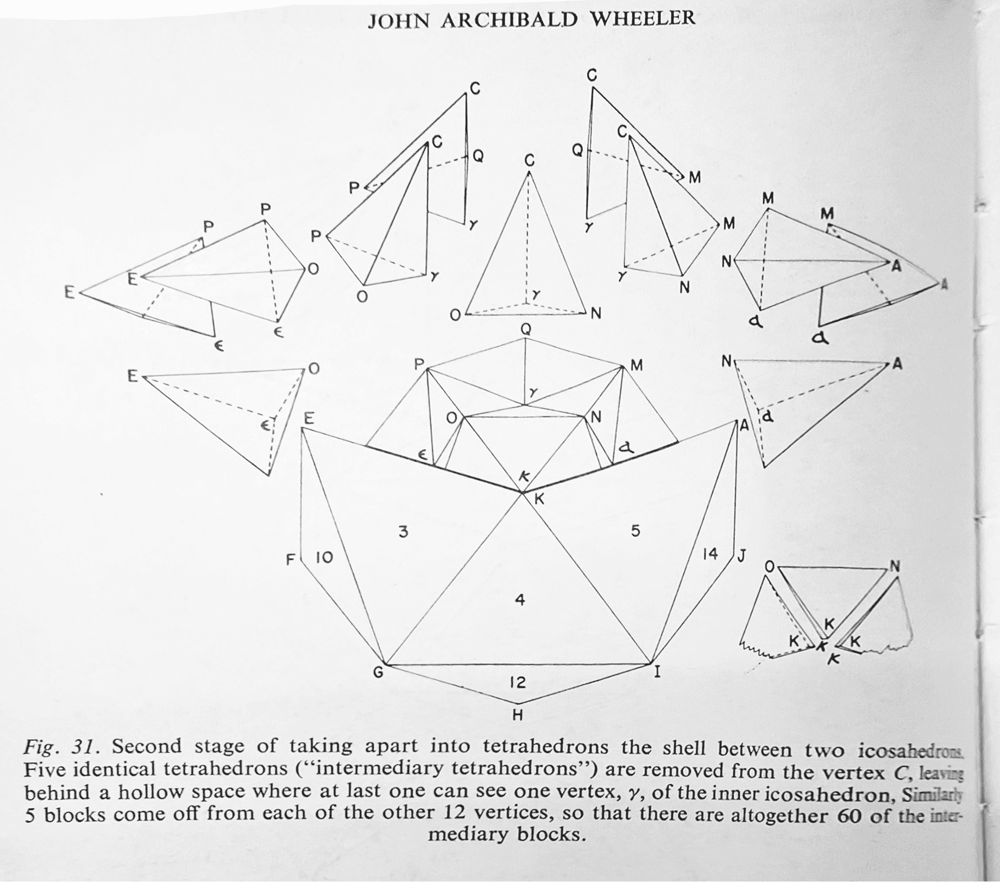

A 3D projection of a 5-cell (performing a double rotation). |
The 4-simplex consists of 5 vertices, 10 edges, 10 triangular faces, and 5 tetrahedral cells. |
Triangles in the fabric of spacetime and blackholesIn 4-geometry the building blocks are 4-simplexes. When time progresses, these blocks evolve and move. In 3-dimensions, the hinge between two tetrahedra is a line. In 4-dimensions, the hinge is a triangle; the blocks which hinge there are 4-simplexes; and the interface between one block and the next is a tetrahedron. The base of this tetrahedron is the triangular hinge and the summit is one point This composite of spacetime can be analyzed using Regge calculus. It is a working discrete model of spacetime, approximated by gluing together polyhedra, where curvature is concentrated on the triangular hinges, and satisfies the Einstein field equations in general relativity. The diagram on the right is the process involved in dissecting a 4-dimensional object. (The object in question is the throat of a black hole, a 4-dimensional hypersphere) Each slice of the object is a layer of 3-dimensional tetrahedra. |
 excerpt from J.A. Wheeler (1964), "Geometrodynamics and the Issue of the Final State", in Relativity, Groups and Topology. |
Quantum Spin Dynamics in Loop Quantum GravityT. Thiemann, Max Planck Institute for Gravitational Physics (2017) |
Visualization of the quantum evolution of spacetime geometryThe colours of the faces of the tetrahedra indicate where and how much area exists at a given moment of time. Excitations of geometry change as dictated by a discrete version of einstein's field equations of general relativity. Technically, the faces form a complex dual to the graph of a spin network state and the colour shows the amount of spin (area) with which the edges of the graph area are charged. |